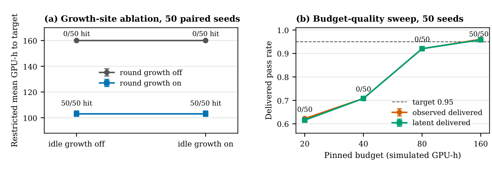

TL;DR
GuardrailLoop makes policy preservation, compute accounting, and crash recovery jointly testable for self-improving agent workflows, and shows that recovering the outcome is not evidence of exactly-once execution.
Abstract
Self-improving agent workflows create an audit problem when the same controller can change both its behavior and the conditions under which that behavior is judged. We present GuardrailLoop, a simulation-based testbed that makes three operational contracts jointly testable: preservation of human-defined policy, compute accounting at every recorded execution prefix, and recovery of a specified scientific state after crashes. A hash-pinned policy fixes goals, scope, evaluation identity, budget, and release conditions; machine-directed evolution is restricted to a code-owned feature catalog and bounded knobs. The contribution is an executable boundary and an evaluation protocol that separates useful adaptation, state recovery, and repeated execution. In a paired 50-seed 2 x 2 study, round-stage growth changes target attainment by +1.00 and restricted mean compute to target by -56.97 simulated GPU-hours (95% paired-bootstrap interval [-58.91,-54.70]); idle growth has zero measured utility effect. Across 240 enumerated crash injections, all runs recover the defined outcome, but only 210 preserve the normalized trace: 30 pre-commit crashes repeat a planner call. Resource-drift, kill-switch, integrity, and output-guard matrices satisfy their specified checks. These findings show why successful outcome recovery is insufficient evidence of exactly-once execution. They establish conformance within one calibrated deterministic testbed, rather than general safety or real-world self-improvement.
Results

Paper
Download PDF (10 pages)
BibTeX
@article{ma2026guardrailed,
title = {Guardrailed Meta-Agent Loops: Stress-Testing Policy Pinning, Budget Bounds, and Crash Recovery},
author = {Qinzhen Ma and Jialin Wu},
journal = {arXiv preprint arXiv:2609.12216},
year = {2026}
}